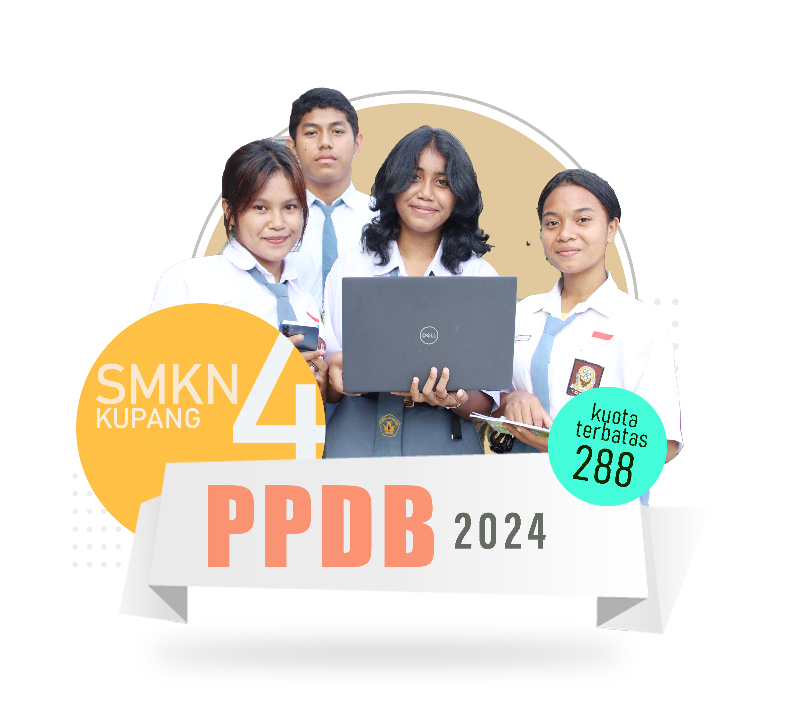

Pendaftaran Online:
26 - 28 Juni 2024 (Pukul 08.00 - 16.00 Wita) Link Pendaftaran:

SYARAT UMUM
1. Persyaratan PPDB bagi calon peserta didik baru SMA/SMK/SMALB
sebagai berikut :
memiliki Ijazah atau Surat Tanda Tamat Belajar SMP/SMPLB/SMP
Inklusif atau bentuk lain yang sederajat atau Surat Keterangan
Lulus dari sekolah, khusus untuk lulusan SMP/SMPLB/SMP Inklusif
sederajat Tahun Pelajaran 2024/2025;
berusia maksimum 21 (dua puluh satu) Tahun pada tanggal 1 Juli
2024 Khusus bagi SMALB 23 Tahun;
untuk Jalur Zonasi wajib memiliki Kartu Keluarga (KK) asli paling
cepat 6 (enam) bulan saat pendaftaran, yang terbit pada Desember
2023 dan tidak dapat menggunakan Keterangan Domisili;
untuk jalur perpindahan Orang Tua didukung dengan bukti surat
pindah tugas Orang Tua
untuk pendaftar melalui jalur afirmasi khususnya dari keluarga
yang kemampuan ekonomi tidak mampu harus memiliki Kartu Program
Keluarga Harapan (PKH), KIP, KPS, KKS termasuk siswa
Disabilitas/Anak Berkebutuhan Khusus (ABK) dan Program Kementrian
Prioritas;
untuk pendaftar melalui jalur prestasi, maka harus menyiapkan
ijazah atau surat keterangan lulus/pengganti ijazah sementara, dan
khusus jalur prestasi non- akademik harus menyiapkan
sertifikat/piagam penghargaan yang menunjukkan prestasi di bidang
olahraga atau seni minimal menjadi juara 3 di tingkat
kabupaten/kota dari penyelenggara yang resmi;
persyaratan calon peserta didik baru baik warga negara Indonesia
atau warga negara asing untuk kelas 7 (tujuh) SMP atau kelas 10
(sepuluh) SMA/SMK yang berasal dari Sekolah di luar negeri selain
memenuhi persyaratan sebagaimana dimaksud dalam huruf a, b, dan c,
wajib mendapatkan surat keterangan dari Direktur Jenderal PAUD,
Pendidikan Dasar dan Menengah.
2. Persyaratan PPDB secara spesifik bagi calon peserta didik baru
SDLB, SMPLB, dan SMALB diatur oleh sekolah masing-masing dengan
metode
pendaftaran oleh orang tua secara langsung di sekolah (Offline)
guru melakukan penjaringan terhadap calon peserta didik.
SYARAT KHUSUS
Persyaratan Pendaftaran Penerimaan Peserta Didik Baru SMA dan SMK
adalah sebagai berikut:
mengisi formulir pendaftaran yang sudah disediakan oleh panitia
sekolah sesuai dengan Formulir Peserta Didik dari Dapodik untuk
yang offline dan mengisi formulir secara online apabila mendaftar
pada sekolah yang melaksanakan Penerimaan Peserta Didik Baru
secara online;
fotokopi Ijazah SMP/MTs/Paket B atau surat keterangan lain yang
setara dengan membawa/menunjukkan aslinya;
pasfoto terbaru ukuran latar belakang biru, ukuran dan jumlah
disesuaikan dengan kebutuhan sekolah;
fotokopi Kartu Keluarga dengan membawa/menunjukkan aslinya yang
diterbitkan paling cepat 6 (enam) bulan sebelum pelaksanaan PPDB;
khusus bagi calon peserta didik asal luar kabupaten/kota yang
mengikuti perpindahan tugas orang tua/wali, wajib melampirkan
Surat Keputusan Perpindahan Tugas orang tua/wali dan Surat
Keterangan Domisili orang tua/wali dalam 1 tahun terakhir;
pendaftaran Calon Peserta Didik Baru tidak boleh diwakilkan untuk
pendaftaran secara offline;
persyaratan tambahan lainnya dapat diatur oleh sekolah masing-
masing;
PERSYARATAN PENDAFTARAN ULANG
Persyaratan Pendaftaran Penerimaan Peserta Didik Baru SMKN 4 Kupang
adalah sebagai berikut:
Fotokopi tanda bukti Kwitansi pembayaran sumbangan Komite Sekolah dana pendidikan lainnya 3 lembar
Fotokopi tanda bukti diterima/pendaftaran ulang online 3 lembar.
Pas foto warna latar biru ukuran 3x4 cm = 3 lembar, mengenakan seragam nasional SMA/SMK dengan atribut lengkap (dasi abu-abu, lambang osis, lambang bendera
merah putih, Lambang Bintang , Lambang/Logo Sekolah, dan papan nama yang dibordir, lokasi sekolah yang dibordir bertuliskan SMK NEGERI 4 KOTA KUPANG
Materai 10.000 3 lembar (Ditempelkan pada surat pernyataan peserta
didik baru)
Mengisi format dapodik, surat pernyataan peserta didik baru, surat peryataan orang tua,
dan Surat Pernyataan tidak pindah Jurusan (semua berkas foto copy rangkap 3)
Map snelhecter plastic sebanyak 3 map (ketentuan warna map tiap
kompetensi keahlian dapat di lihat pada catatan)
Semua berkas dari nomor 1 s/d 11 tiap-tiap lembar dimasukkan
dalam 3 map snelhecter plastic dan disusun sesuai dengan
urutan
Ketentuan warna map tiap kompetensi keahlian :
Teknik Komputer dan Jaringan : Map warna Biru
Desain Komunikasi Visual : Map warna Merah
Kriya Kreatif Batik dan Tekstil : Map warna Pink
Kriya Kreatif Kayu dan Rotan : Map warna Hijau
Desain Interior dan Teknik Furnitur : Map warna Kuning
TAHAPAN PENDAFTARAN ONLINE
PPDB SMK secara Online dilakukan dengan sistem pendaftaran secara
daring (Online) melalui website
https://ntt.siap-ppdb.com
yang telah disediakan dengan mekanisme jalur umum tanpa zonasi;
Pendaftaran Ulang 8 - 20 Juli 2024 (Pukul 09.00 - 16.00 Wita)
Calon Peserta Didik melakukan pendaftaran langsung atau daring
(Online) cukup dengan memasukan Nomor Induk Siswa Nasional (NISN)
pada aplikasi pendaftaran dengan memilih 1 (satu) kompetensi
keahlian pada 1 (satu) sekolah sebagai pilihan dengan meng-upload
scan asli Ijazah/Surat Keterangan Lulus dan selanjutnya mencetak
bukti pendaftaran;
Untuk Peserta Didik dari luar Provinsi Nusa Tenggara Timur karena
alasan pindah mengikuti orang tua atau wali atau Peserta Didik
yang lulus pada Tahun Pelajaran sebelumnya, atau peserta didik
yang datanya tidak ditemukan dalam database maka dapat melakukan
pendaftaran melalui menu Pendaftaran di luar database pada website
https://ntt.siap-ppdb.com
secara Online dengan mengunggah dokumen- dokumen sebagaimana
tercantum pada saat waktu pendaftaran dibuka;
Pendaftaran untuk tiap kompetensi keahlian ditutup saat Kuota
kompetensi keahlian telah penuh;
Calon Peserta Didik yang telah mendaftar pada SMK tidak dapat
mendaftar lagi ke SMK lain atau SMA lainnya;
PERSYARATAN PENDAFTARAN PPDB 2024 SMKN 4 KUPANG
Persyaratan Pendaftaran penerimaan Peserta didik Baru pada SMK Negeri 4 Kupang
adalah sebagai berikut :
Mengisi formulir pendaftaran secara online;
Scan Ijazah SMP/MTs/Paket B atau Surat Keterangan lain yang setara;
Pas foto terbaru latar belakang biru, ukuran max 100 kb;
Scan Kartu Keluarga yang diterbitkan paling cepat 6 (enam) bulan sebelum
pelaksanaan PPDB;
Bagi calon peserta didik asal luar kabupaten/kota yang pindah karena mengikuti
perpindahan tugas orang tua/wali, wajib melampirkan scan Surat Keputusan
Perpindahan tugas orang tua/wali dan surat Keterangan Domisili orang tua/wali
dalam 1(satu) tahun terakhir;
Usia calon peserta didik setinggi-tingginya 21 Tahun pada tanggal 1 Juli 2024.
“PADA PPDB 2024, SMKN 4 KUPANG NTT HANYA MENERIMA PENDAFTARAN ONLINE. BAGI YANG TIDAK MENDAFTAR ULANG SECARA ONLINE DINYATAKAN
MENGUNDURKAN DIRI”